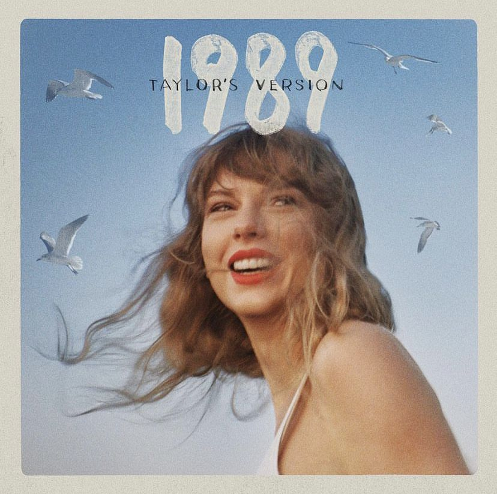

The Tortured Poets
Departament
"THE TORTURED POETS DEPARTMENT"
é o 11º álbum de estúdio lançado por Taylor Swift. Foi lançado em 19 de abril de 2024, pela Republic Records.

1989
1989 (Taylor's Version)
é o quarto álbum regravado da
cantora americana Taylor Swift. O álbum é uma regravação do quinto álbum de estúdio de Swift, 1989 (2014).

Speak Now
Speak Now (Taylor's Version)
é o terceiro álbum regravado da cantora americana Taylor Swift,
lançado em 7 de julho de 2023 através da gravadora Republic Records. É uma regravação do terceiro álbum de estúdio de Swift, Speak Now (2010)